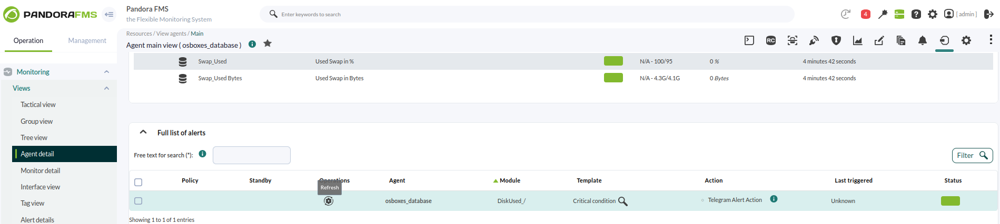

Sistema de alertas con Telegram
Bot & Configuración en el server
Creación del bot de Telegram
Lo primero que debemos hacer es crearnos un bot en telegram.
Usaremos "@botfather" para hacer la creación, donde nos dará el token.

Luego crearemos un grupo con dicho bot, de ahí sacaremos el chatID del grupo para que nos envie los mensajes a ese grupo.
Configuración del servidor
Una vez creado el grupo de Telegram pasaremos descargarnos un paquete de la libreria oficial de pandora que nos permitirá enviar mensajes.

Descomprimimos el paquete, le damos permisos de ejecución y lo ponemos dentro de la ruta /usr/share/pandora_server/utils/pluggin
sudo chmod +x *

Antes de seguir, nos harán falta python3 y python3-pip para poder instalar lo que que necesitamos para seguir adelante.
sudo apt install python3 python3-pip
Ahora que ya tenemos las herramientas que necesitamos nos posicionamos en la ruta donde hemos dejado los paquetes desmcomprimidos e instalamos el paquete de requirements.txt
cd /usr/share/pandora_server/utils/pluggin
sudo su --> necesitaremos los permisos de root para hacerlo
pip3 install requirements.txt

Prueba del mensaje a Telegram
Ejecutaremos el siguiente comando para comprobar que podemos recibir mensajes en el grupo de Telegram que hemos creado.
pyhton3 pandora-telegram-cli.py -t *TOKEN* -c *CHATID* -m *"MENSAJE"*

Pandora
Configuración de la alerta
Una vez comprobado que se pueden enviar mensajes vamos a crear el comando dentro de la interfaz gráfica de Pandora para poder usarlo.
Donde añadiremos el comando que hemos usado anteriormente pero sustetuyendo por campos que más abajo, en fields, rellenaremos con al ifnormación necesaria.
Management > Alerts > Commands

Después configuraremos la acción, donde enlazaremos la acción al comando que hemos creado y añadiremos el mensaje que queremos recibir.
Management > Alerts > Actions
Seguidamente iremos a la lista de alertas, donde pasaremos a añadirles las alertas a los agentes para que nos avise.
Management > Alerts > List of Alerts
Comprobamos que se nos envia el mensaje del modulo correcto que hemos especificado a telegram.
